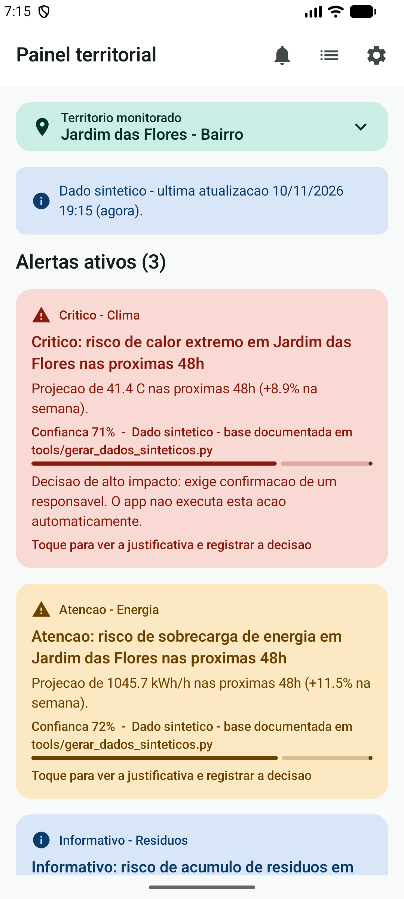
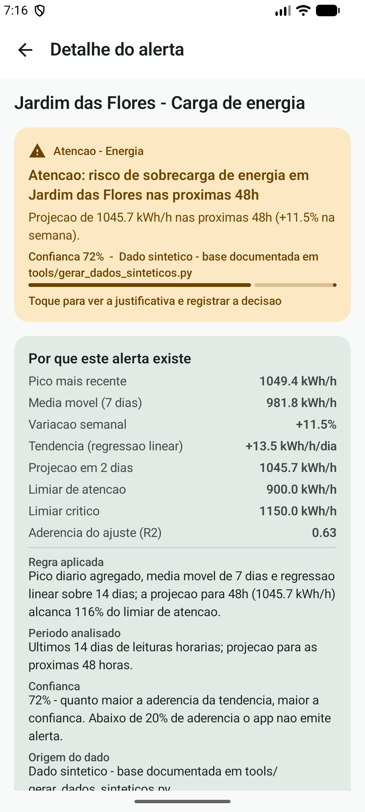
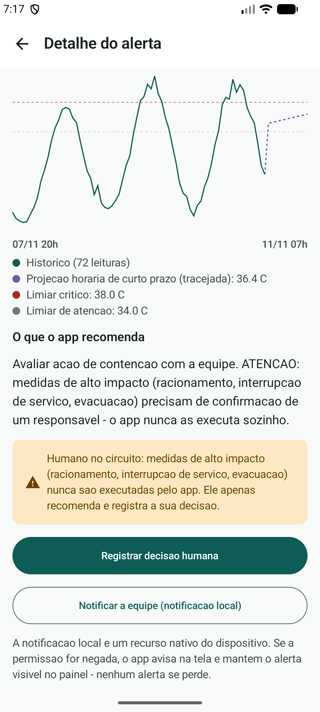
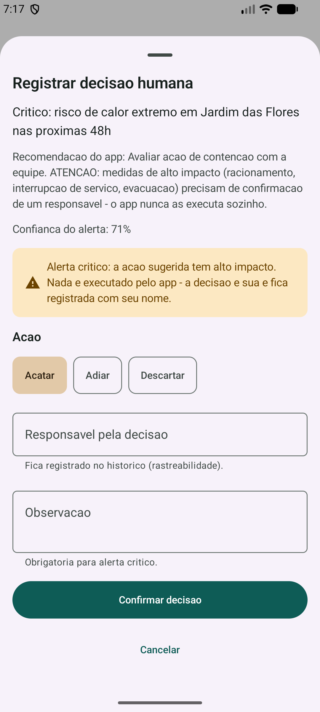
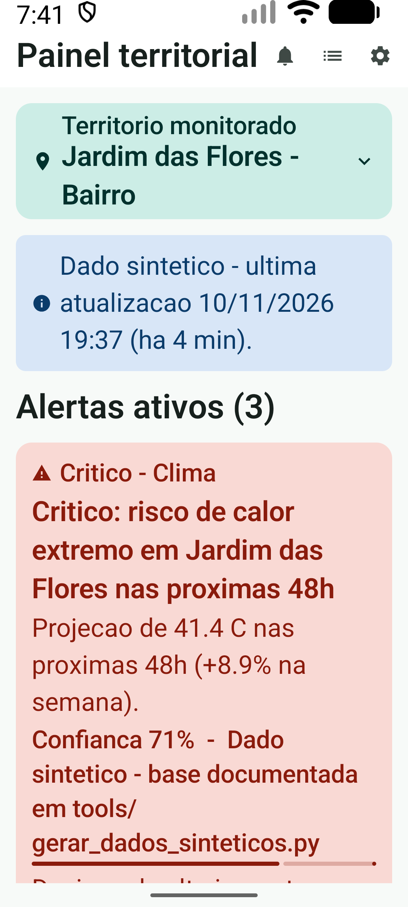
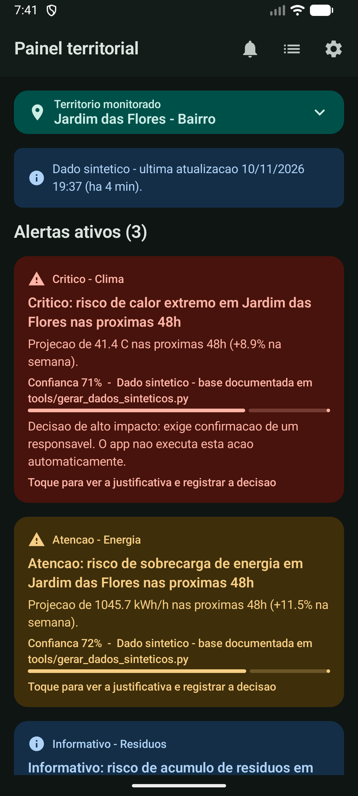
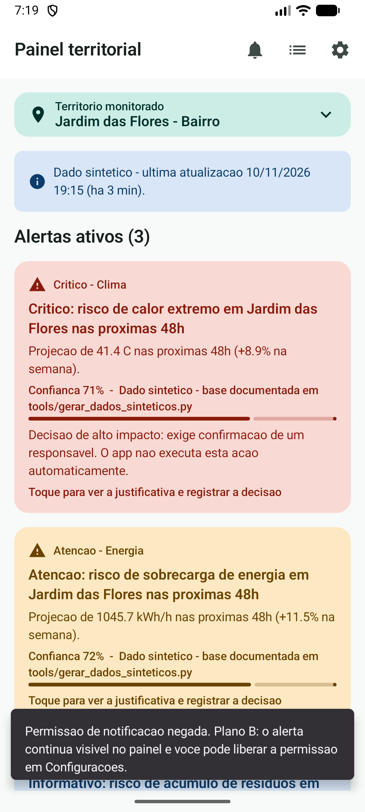
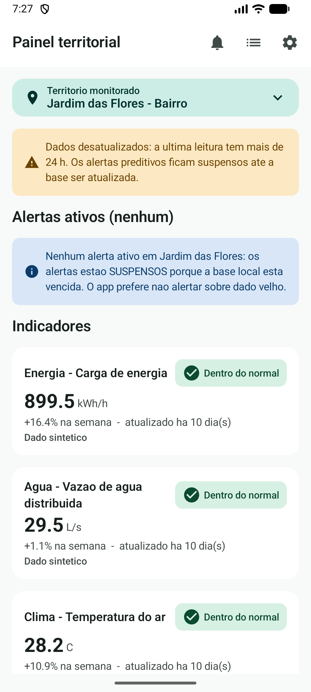
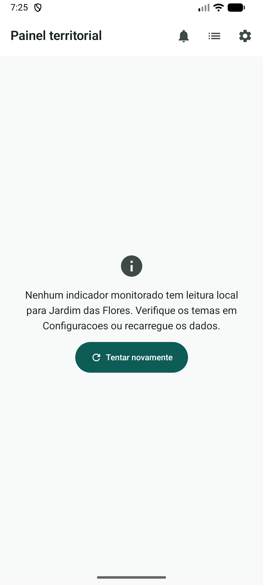
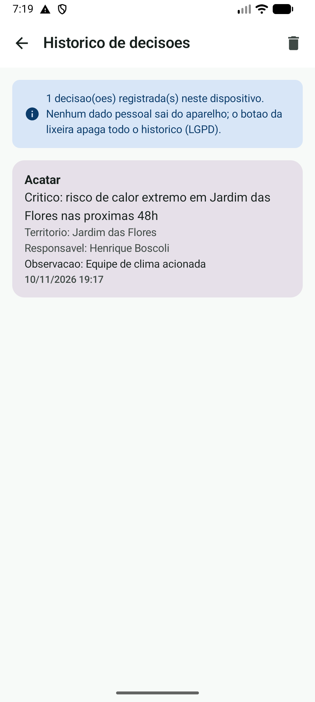

Um app Android funcional (APK release instalável, 7,46 MB) que lê uma base territorial local, calcula indicadores, projeta risco para as próximas 48 h com um método explicável, exibe todo alerta junto da sua justificativa, registra a decisão humana com responsável e data, e degrada com clareza quando os dados faltam, vencem ou a permissão é negada. Tudo offline.
| Elemento | Preenchimento da equipe |
|---|---|
| Objetivo da solução | Reunir em um único painel os indicadores de água, energia, clima, resíduos e serviços de um território, antecipar problemas com 48 h de antecedência e entregar cada alerta com a justificativa que o originou, para que uma pessoa responsável decida o que fazer — e tenha essa decisão registrada. |
| Problema a ser resolvido | Hoje os dados territoriais estão dispersos (fontes e formatos diferentes), a análise é reativa (o problema é percebido depois de acontecer), as informações chegam sem justificativa (não se sabe por que algo é um risco) e não há critério para priorizar entre vários problemas simultâneos. O resultado é decisão por relato informal e planilha montada às pressas. |
| Público-alvo | Usuário principal: o Gestor Territorial (subprefeitura, defesa civil,
liderança comunitária) que precisa decidir rápido, muitas vezes em campo, sem internet e em
um celular simples. Também usam: moradores (consultam e entendem o risco do seu bairro) e o administrador/curador de dados (gerencia territórios, fontes e limiares). Beneficiada: a população do território monitorado. |
| Benefícios esperados | Antecipação (agir antes do problema atingir a população), transparência (todo alerta mostra dado, regra, período e fonte), priorização (níveis informativo/atenção/crítico com confiança declarada) e rastreabilidade (histórico de quem decidiu o quê e por quê). |
| Para moradores | Para gestores e lideranças | Para a comunidade |
|---|---|---|
| Informação clara sobre o risco do seu território, com o motivo explicado em texto (“o consumo cresceu 11,5% na semana e a projeção alcança 116% do limiar”) e não apenas uma cor na tela. | Visão consolidada de 5 temas em um painel, alertas ordenados por gravidade, com nível de confiança para separar o que exige ação do que exige só acompanhamento. | Problemas tratados antes de afetarem a população e um registro público do que foi decidido, por quem e quando — base para prestação de contas. |
| Cenário atual (As-Is) | Cenário futuro (To-Be) |
|---|---|
|
|
| Papel | Responsabilidades | Onde aparece no app |
|---|---|---|
| Morador | Consulta indicadores e alertas do seu território, lê a justificativa e entende o nível de confiança. | Painel, Detalhe do Indicador, Detalhe do Alerta |
| Gestor Territorial | Analisa o gráfico e o alerta, avalia a justificativa, decide (acatar, adiar ou descartar), registra a observação e pode notificar a equipe. | Detalhe do Alerta, DecisionSheet, Histórico de Decisões |
| Administrador / Curador de Dados | Define o território padrão, escolhe os temas monitorados, confere os limiares de referência e a origem/licença das fontes. | Configurações |
| Princípio | Como o app atende — e onde isso está no código |
|---|---|
| Justificativa obrigatória | O tipo Alert só existe com um campo justification preenchido:
o modelo de domínio torna impossível criar um alerta sem justificativa. O
JustificationPanel exibe 8 variáveis com valor, a regra aplicada, o período e a
fonte. |
| Transparência da incerteza | Toda tela mostra a data da última leitura, o tempo relativo (“há 4 min”) e a origem (“Dado sintético”). O alerta mostra a confiança em % e a aderência do ajuste (R²). Quando o app não emite alerta, ele diz por quê. |
| Humano no circuito | Alerta crítico recebe requiresHumanConfirmation = true: a tela avisa que
medidas de alto impacto (racionamento, interrupção de serviço, evacuação) não são
executadas pelo app, e o registro da decisão exige observação escrita. |
| Rastreabilidade | DecisionEntity no Room grava alerta, território, responsável, ação,
observação e data. O RegisterDecisionUseCase recusa decisão sem responsável
identificado (mínimo 3 letras). |
| Privacidade e ética | Base 100% sintética, sem dado pessoal real. Nada sai do aparelho. O usuário apaga o histórico de decisões com um toque (tela Configurações e Histórico). |
| Tema | Fonte | Indicador no app | Limiares | Exemplo de alerta gerado |
|---|---|---|---|---|
| Energia recorte principal |
Base sintética de curva de carga, calibrada na ordem de grandeza de publicações abertas do ONS | Carga de energia (kWh/h), leitura horária | Atenção 900 Crítico 1150 |
“Atenção: risco de sobrecarga de energia em Jardim das Flores nas próximas 48 h” |
| Clima | Base sintética de temperatura, ordem de grandeza do INMET | Temperatura do ar (°C) | Atenção 34 Crítico 38 |
“Crítico: risco de calor extremo em Jardim das Flores nas próximas 48 h” |
| Água | Base sintética de vazão, ordem de grandeza do SNIS | Vazão de água distribuída (L/s) | Atenção 48 Crítico 58 |
“Atenção: risco de queda de pressão de água…” |
| Resíduos | Base sintética de coleta por rota | Resíduos acumulados (t) | Atenção 18 Crítico 24 |
“Informativo: risco de acúmulo de resíduos…” |
| Serviços | Base sintética de demanda de atendimento | Tempo de espera no atendimento (min) | Atenção 35 Crítico 50 |
“Atenção: risco de fila no atendimento…” |
Territórios: Jardim das Flores (bairro, território padrão), Centro (bairro) e Sítio Bom Retiro (área rural). Volume: 7.575 leituras horárias cobrindo 21 dias (5 indicadores × 3 territórios × 505 horas).
| Pergunta de negócio | Preenchimento da equipe |
|---|---|
| O que vale construir? | O recorte viável para o prazo é sobrecarga de energia: tem ciclo diário claro, limiar de referência objetivo e consequência direta (queda de energia em onda de calor). Os outros quatro temas entram com o mesmo motor de previsão, provando que a arquitetura é genérica sem custar mais trabalho. |
| Para quem? | Usuário principal: Gestor Territorial. Situação real de uso: em campo, com pressa, sem internet, em aparelho simples e com a tela no sol. Daí as decisões de alvo de toque de 48 dp, contraste alto, offline-first e texto que cresce com a fonte do sistema. |
| Sob quais restrições? | Trio, prazo de um semestre, plataforma Android com Kotlin e Compose,
minSdk 24 (Android 7.0, cobre aparelhos antigos) e
targetSdk 36. Sem servidor: a base precisa caber no APK. |
| Com qual risco? | (1) Falso positivo — alerta que não se confirma destrói a confiança; tratado com o corte de aderência (R² < 0,20 não emite alerta). (2) Dado ausente ou vencido — tratado com política de validade de 24 h e suspensão dos alertas, sempre com aviso na tela. (3) Permissão negada — tratada com plano B (o alerta permanece no painel). (4) iOS fora do escopo — assumido e justificado no ADR-001. |
| Qual a jornada principal? | 1) Abrir o app → painel do território padrão já montado (offline). 2) Ler a faixa de origem e data da última atualização. 3) Ver os alertas ativos ordenados por gravidade (crítico primeiro). 4) Tocar no alerta → ler a justificativa completa (variáveis, regra, período, fonte, confiança) e o gráfico com histórico, limiares e projeção. 5) Registrar a decisão: acatar, adiar ou descartar, com responsável e observação. 6) Opcional: notificar a equipe (notificação local). Quando faltam dados: o painel não fica em branco — mostra o estado vazio com o motivo e um botão “Tentar novamente”; quando os dados estão vencidos, mostra a faixa de aviso e declara que os alertas estão suspensos. |
| ID | Descrição | Prioridade | Onde está implementado |
|---|---|---|---|
| RF01 | Exibir, por território, os indicadores dos temas monitorados com valor atual, unidade, variação semanal, status e data da última leitura; e o gráfico de série temporal com histórico, limiares de referência e faixa de projeção. | Alta | DashboardScreen, KpiCard, TrendChart |
| RF02 | Gerar alerta preditivo para as próximas 48 h classificado em informativo, atenção ou crítico, sempre acompanhado da justificativa (variáveis e valores, regra aplicada, período analisado, fonte do dado e confiança). | Alta | ForecastEngine, AlertCard, JustificationPanel |
| RF03 | Carregar a base territorial dos arquivos locais na primeira execução e ler os dados do banco do dispositivo em todas as consultas, sem depender de rede. | Alta | SeedLoader, TidDao, TerritoryRepositoryImpl |
| RF04 | Persistir localmente a série temporal, o território selecionado, os temas monitorados e o histórico de decisões, mantendo tudo disponível após fechar o app. | Alta | TidDatabase (Room), PreferencesStore |
| RF05 | Registrar a decisão humana sobre um alerta (acatar, adiar ou descartar) com responsável, observação e data, e listá-la no histórico; alerta crítico exige observação escrita. Nenhuma ação de alto impacto é executada pelo app. | Alta | DecisionSheet, RegisterDecisionUseCase, DecisionsScreen |
| RF06 | Disparar notificação local do alerta mais grave usando recurso nativo do dispositivo, pedindo a permissão no toque que precisa dela e tratando os três caminhos: concedida, negada e indisponível — com plano B na tela. | Média | AlertNotifier, AndroidAlertNotifier |
| RF07 | Permitir ao usuário trocar de território, ligar/desligar temas monitorados, consultar limiares e origem/licença dos dados, e apagar o histórico de decisões (LGPD). | Média | SettingsScreen, TerritorySelector |
| RF08 | Informar o motivo sempre que um indicador não gerar alerta (histórico insuficiente, dado vencido, tendência não identificável ou projeção abaixo do limiar). | Média | ForecastEngine.Result.NotEmitted, seção “Por que não geraram alerta” |
| ID | Atributo | Meta | Como foi medido | Resultado medido |
|---|---|---|---|---|
| RNF01 | Desempenho | O painel fica pronto (dados lidos + previsão calculada para 5 indicadores) em ≤ 2.000 ms na versão release. | Marca TID_PERF dashboard_ms no logcat, emulador Pixel API 36, 5 execuções
frias e 8 mornas. |
341 ms na 1ª abertura; 22 ms nas seguintes. Folga de 5,9×. |
| RNF02 | Fluidez | < 5% de quadros perdidos e p95 do tempo de quadro ≤ 20 ms na rolagem do painel. | dumpsys gfxinfo com reset + 16 rolagens roteirizadas. |
3,57% de quadros perdidos; p95 = 18 ms (release). |
| RNF03 | Acessibilidade | Contraste ≥ 4,5:1 em todos os pares de cor, alvos de toque ≥ 48 dp, fonte a 200% sem corte, e nível de alerta nunca comunicado só pela cor. | Cálculo WCAG dos 17 pares da paleta (claro e escuro);
settings put system font_scale 2.0; inspeção de semantics. |
Pior par = 5,48:1. Fonte 200% sem corte. Todo nível tem ícone + rótulo. |
| RNF04 | Disponibilidade offline | O app abre e opera 100% sem rede; a base local tem política de validade de 24 h e o app nunca alerta sobre dado vencido. | App executado com Wi-Fi e dados desligados; modo “Simular dados desatualizados” em Configurações. | Sem permissão de INTERNET no manifesto. Dado vencido suspende os alertas com aviso. |
| RNF05 | Confiabilidade | Zero falhas no fluxo principal e cobertura de teste do motor de previsão, inclusive dos casos em que ele não deve alertar. | logcat AndroidRuntime:E no roteiro completo;
gradlew :app:testDebugUnitTest. |
Nenhuma exceção registrada. 16/16 testes de unidade passando. |
| RNF06 | Privacidade (LGPD) | Nenhum dado pessoal real no repositório ou no aparelho; o usuário pode apagar tudo que gerou. | Revisão do gerador de dados e do schema do Room; teste do botão de exclusão. | Base 100% sintética e documentada. Exclusão do histórico em um toque. |
| Escolha | Abordagem | Ideia central |
|---|---|---|
| ☒ | MVVM com fluxo unidirecional de dados, aplicado sobre o blueprint em camadas da disciplina | O Compose observa o estado exposto pelo ViewModel por StateFlow: o estado
desce, os eventos sobem. As três camadas (interface, domínio, dados/nativo) conversam
apenas por contratos. |
| ☐ | Arquitetura em Camadas pura | Adotada como base, mas sozinha não resolve o estado da tela. |
| ☐ | Clean Architecture | Avaliada e descartada (ver abaixo). |
| ☐ | Modular por Funcionalidade (Feature-First) | Avaliada e descartada (ver abaixo). |
As duas respondem a perguntas diferentes e não competem. O blueprint em camadas responde “onde mora cada decisão” — e é ele que garante que trocar a base sintética por uma API pública real não encoste no domínio. O MVVM com fluxo unidirecional responde “quem é dono do estado da tela” — e é ele que garante que a rotação não perde dados e que a interface não inventa regra. Dizer só “usamos MVVM” deixaria a primeira pergunta sem resposta.
| Item | Preenchimento da equipe |
|---|---|
| Motivação | O problema é ler dado local, calcular risco e mostrar com justificativa. A
parte difícil é a regra (quando alertar, quando calar, qual confiança), não
a tela. Separar o domínio em Kotlin puro permitiu testar essa regra na JVM, sem emulador:
são 16 testes que rodam em segundos. Com um trio e um semestre, isso é o que mais protege o
prazo. O MVVM com StateFlow é o padrão que a própria plataforma recomenda e
com o qual a equipe já trabalhou no semestre — não há custo de aprendizado. |
| Benefícios | Testabilidade: o ForecastEngine não importa nada do
Android; os testes cobrem inclusive os casos de não alertar.Substituição: o domínio depende da interface TerritoryRepository; trocar Room por API remota é escrever uma nova
implementação — nenhum caso de uso muda.Estado previsível: um StateFlow<UiState<T>> por
tela; carregando, vazio, erro, desatualizado e sucesso são estados declarados, não
ifs espalhados.Ciclo de vida: o estado vive no ViewModel e sobrevive à rotação de graça. |
| Limitações | Mais arquivos e mais indireção do que colocar a lógica na tela: 36 arquivos Kotlin
(~4.400 linhas) para 5 telas. Mapear entidade do Room para modelo de domínio é código
repetitivo. E, sem Hilt, o AppContainer é montado à mão — aceitável com um
repositório, mas não escalaria para dezenas de dependências. |
| Alternativas descartadas | Clean Architecture completa — traria mappers e interfaces em
três níveis para um app de 5 telas; o custo de cerimônia não se paga no prazo. Pegamos dela
o que importa: a direção das dependências aponta para o domínio. Feature-First (módulos Gradle por tema) — energia, água e clima usam o mesmo motor e o mesmo modelo; separá-los em módulos criaria duplicação e aumentaria o tempo de build sem benefício real para um trio. Flutter / React Native — ver ADR-001 (Etapa 6). Em resumo: iOS está fora do escopo declarado, a equipe tem experiência em Android e o app depende de recurso nativo (notificação com permissão em tempo de execução); uma camada de bridge só adicionaria risco. O domínio e os contratos entre camadas sobrevivem a uma troca futura de framework — só a pasta ui/ seria reescrita. |
| Requisito | Interface (Compose) | Domínio (Kotlin puro) | Dados e Nativo |
|---|---|---|---|
| Exibir indicadores e gráficos | KpiCard e TrendChart descrevem o estado recebido; não
calculam nada |
GetDashboardUseCase monta os KPIs a partir das leituras |
TerritoryRepositoryImpl lê do Room |
| Gerar alerta preditivo | AlertCard + JustificationPanel |
ForecastEngine: regra, nível, confiança e justificativa |
Leituras históricas no Room (janela de 15 dias) |
| Dados ausentes ou vencidos | StateView (vazio) e WarningBanner com a data da última
atualização |
Define a validade (24 h) e quando não emitir alerta | DataFailureMode no repositório + data de atualização no banco |
| Falha ao ler os dados | StateView (erro) com mensagem clara e botão “Tentar novamente” |
UiState.Error como estado declarado; política de degradar |
runCatching na leitura do Room, exceção traduzida em mensagem |
| Notificar alerta crítico | Pede a permissão no toque que precisa dela; exibe o plano B se negada | Contrato AlertNotifier + NotifyResult (enviado / negado /
indisponível) |
AndroidAlertNotifier: único ponto que conhece
NotificationManager |
| Registrar decisão humana | DecisionSheet com ação, responsável e observação |
RegisterDecisionUseCase valida e cria o registro |
DecisionEntity persistida no Room |
| Pergunta | Resposta da equipe |
|---|---|
| Responsabilidade | Sim. Nenhum Composable calcula alerta nem acessa o banco; nenhum caso de uso
formata texto de tela; nenhuma entidade do Room aparece fora de data/. |
| Dependência | Não. O pacote domain/ não tem um único import android.* — por
isso os 16 testes rodam na JVM, sem emulador. Essa é a prova objetiva da separação. |
| Substituição | Sim. Trocar a base sintética por uma fonte pública real é escrever outra classe que
implemente TerritoryRepository e registrá-la no AppContainer —
uma linha. Nem o ForecastEngine nem as telas mudam. |
| Risco: que fronteira falha primeiro? | A permissão de notificação, porque depende do usuário e do sistema. Por
isso ela é a única isolada atrás de um contrato com três resultados declarados
(Sent, PermissionDenied, Unavailable). A segunda é a
validade do dado, tratada com a regra de 24 h. |
| Complexidade adicional | Real: ~4.400 linhas em 36 arquivos para 5 telas, e o mapeamento entidade↔domínio é repetitivo. O que compra: regra testável sem emulador e troca de fonte de dados sem refatoração. Para um trio com prazo fechado, o seguro valeu o prêmio. |
Pergunta-guia: onde este dado vive quando a tela some?
| Item | Preenchimento da equipe |
|---|---|
| Solução adotada | ViewModel + StateFlow por tela, lido no Compose com
collectAsStateWithLifecycle(). remember / mutableStateOf
só para estado que nasce e morre na tela. Sem Hilt: a injeção é um
AppContainer montado à mão na Application — com um repositório e
quatro casos de uso, Hilt cobraria tempo de build e de aprendizado sem resolver problema
nenhum. Como tudo depende de interfaces, adotar Hilt depois não quebra nada. |
| Tipos de estado | Local (vive na tela): menu do TerritorySelector aberto
(remember); rascunho do formulário de decisão (rememberSaveable,
sobrevive à rotação).Compartilhado (vive entre telas e entre sessões): território selecionado, temas monitorados e modo de simulação — em SharedPreferences, com dono único
(PreferencesStore), alcançados só pelo repositório.De dados (vem do banco, tem validade): leituras, KPIs, alertas e decisões. Estado global é dívida: não existe singleton mutável no app; cada item acima tem um dono declarado. |
| Estados de tela | sealed interface UiState<out T> com Loading,
Empty(message), Error(message) e
Success(data, staleWarning). O componente StateView traduz cada um
numa tela de verdade, em todas as telas: nunca há tela branca, nem erro sem
saída. O aviso de dado vencido viaja dentro do próprio Success, porque o app
continua útil com dado velho — só não alerta. |
| Fluxo de dados | Toque no Composable → callback → método do ViewModel → caso de
uso → repositório → Room → o caso de uso devolve o modelo de domínio → o ViewModel publica
em StateFlow → o Compose recompõe. O estado desce, os eventos
sobem; nenhum componente altera estado que não seja dele. |
| Ciclo de vida | Rotação: o estado vive no ViewModel e sobrevive; o rascunho do
formulário usa rememberSaveable.Botão Voltar: a rota carrega só identificadores, nunca o objeto — ao voltar, a tela relê do repositório e nunca mostra dado obsoleto. Morte do processo: território, temas e modo de simulação estão em SharedPreferences; as leituras e as decisões estão no Room. Nada essencial
vive só em memória.Carregamento duplicado: o painel recarrega no ON_RESUME
(LifecycleResumeEffect) e uma nova carga cancela a anterior
(loadJob?.cancel()); as telas de detalhe guardam a última chave carregada e
ignoram pedidos repetidos. |
| Estado derivado | KPIs, alertas e a série do gráfico não são persistidos: são calculados a partir das leituras a cada carga. Não há duas versões da verdade. Dentro do painel, os picos diários são calculados uma vez por indicador e reaproveitados pelo motor de previsão e pelo KPI. |
| Item | Preenchimento da equipe |
|---|---|
| Origem e licença | Fonte única: base sintética gerada por
tools/gerar_dados_sinteticos.py, em três arquivos JSON em
app/src/main/assets/seed/ (territories.json 312 B,
indicators.json 998 B, readings.json 46 KB).
Licença: uso acadêmico livre (GS2026.2). Os valores foram calibrados para
ficar na mesma ordem de grandeza de publicações abertas (ONS — curva de carga; SNIS —
saneamento; INMET — clima), mas não reproduzem nenhuma série real e nenhum
dado dessas fontes foi copiado. |
| Carga dos dados | SeedLoader lê os arquivos de assets/ e popula o Room na
primeira execução, em uma única transação (TidDao.seedAll): ou
a base entra inteira, ou não entra. A operação é idempotente — se já houver
território, nada acontece. Daí em diante o repositório entrega os dados ao domínio pelo
contrato TerritoryRepository, que não menciona Room nem assets. |
| Dados sintéticos | Gerados com semente fixa (SEED = 2026): rodar o script de novo produz
exatamente a mesma base. O modelo é base × tendência semanal × ciclo diário × fator de
fim de semana × ruído gaussiano, com perfil declarado por (indicador, território).
Na tela, todo dado é identificado como fictício: a faixa do painel, cada
KpiCard, cada AlertCard e a justificativa trazem
“Dado sintético”, e a tela Configurações traz a origem e a licença por extenso. |
| Atualização e validade | A base é recarregada a cada nova versão do app (nova carga dos assets). O instante de
cada leitura é calculado no momento da carga a partir do campo
startHoursAgo, então a base nunca nasce velha. O app exibe sempre a data e o
tempo relativo da última leitura (“há 4 min”) e, passadas 24 h, mostra a
faixa de dado desatualizado e suspende os alertas. |
| Privacidade | Nenhum dado pessoal real, em nenhum ponto. Os dados territoriais são agregados por bairro/área. O único dado digitado por uma pessoa é o nome do responsável pela decisão, que fica apenas no aparelho e pode ser apagado pelo próprio usuário. |
| Item | Preenchimento da equipe |
|---|---|
| Tecnologia escolhida | Room 2.8.5 sobre SQLite para a série temporal e as decisões: são
milhares de linhas que precisam de consulta por território, indicador e faixa de tempo —
exatamente o que um índice resolve e um arquivo não.
SharedPreferences para as quatro preferências simples. Avaliamos DataStore;
ele seria a escolha certa se houvesse concorrência ou dados estruturados, mas aqui
adicionaria uma dependência para guardar quatro chaves. A troca é local ao
PreferencesStore. |
| O que é persistido | Leituras (série temporal, 7.575 linhas), territórios, indicadores com seus limiares, e o histórico de decisões humanas. Não são persistidos KPIs nem alertas: são estado derivado. |
| Offline é regime normal | O app não declara a permissão de INTERNET. Toda consulta vem do banco local. A política de atualização é: carga na instalação, validade de 24 h, aviso explícito ao usuário quando vencida e suspensão dos alertas preditivos nesse período. |
| Repositório | TerritoryRepositoryImpl isola Room, assets e preferências. O domínio só
conhece a interface. É também onde mora o DataFailureMode, que permite
demonstrar a degradação sem mexer no código. |
| Privacidade (LGPD) | Quais dados: leituras sintéticas, território escolhido, temas
monitorados e o histórico de decisões (nome do responsável, ação, observação, data). Por quanto tempo: enquanto o app estiver instalado. Quem coleta e guarda: o próprio aparelho — não há servidor nem envio. Como remover: botão “Apagar o histórico de decisões” em Configurações e no Histórico; desinstalar remove tudo ( allowBackup=false, sem cópia em nuvem). |
| Entidade | Atributos | Observações |
|---|---|---|
Territórioterritories |
id (PK), name, type (CIDADE / BAIRRO /
AREA_RURAL), latitude, longitude |
Enum gravado como texto para não exigir migração ao surgir um novo tipo. |
Indicadorindicators |
id (PK), theme, name, unit,
attentionThreshold, criticalThreshold, description |
Os limiares de referência vivem no dado, não no código: mudar um limiar é mudar a base. |
Leiturareadings |
id (PK auto), indicatorId, territoryId,
timestamp, value, origin (PUBLICA / SINTETICA /
AUTORIZADA) |
Índice composto (territoryId, indicatorId, timestamp). A origem acompanha
cada leitura, então uma base mista ficaria identificada linha a linha. |
| Alerta não persistido |
id, tipo, level, confidence,
justification, janela prevista, valor projetado, recomendação,
requiresHumanConfirmation |
Estado derivado: recalculado a partir das leituras. Persistir criaria duas verdades — um alerta salvo poderia contradizer o dado atual. |
Decisãodecisions |
id (PK auto), alertId, alertTitle,
territoryName, responsible, action (ACATAR / ADIAR /
DESCARTAR), note, createdAt |
Guarda o título do alerta no momento da decisão, e não só o id: o histórico precisa continuar legível mesmo que o alerta mude depois. |
Todo recurso externo tem três estados — disponível, negado e instável — e os três estão
modelados em NotifyResult. A tela nunca chama a API do Android
diretamente: ela conhece só a interface AlertNotifier, declarada no domínio.
| Recurso | Risco | Plano B implementado |
|---|---|---|
| Notificação local de alerta crítico | Android 13+ exige POST_NOTIFICATIONS em tempo de execução; o usuário pode
negar ou negar para sempre. |
A permissão é pedida no toque que precisa dela (botão de sino e botão “Notificar a equipe”), não na abertura do app. Se negada, uma mensagem explica que o alerta continua visível no painel e Configurações mostra um aviso com atalho para as configurações do sistema. Nenhum alerta se perde. |
| Canal de notificação | Usuário pode desligar o canal no sistema, mesmo com a permissão concedida. | areNotificationsEnabled() é verificado antes de notificar; o resultado
Unavailable(reason) informa o motivo na tela. |
| Armazenamento local | Gravação parcial, espaço insuficiente, processo morto no meio da carga. | A carga inicial inteira em uma transação; leitura protegida por
runCatching, com UiState.Error e botão “Tentar novamente”. |
Regra prática adotada: pedir a permissão no toque que precisa dela, com o motivo visível na tela, e tratar os três caminhos — concedida, negada e negada para sempre. Para a defesa, o roteiro de demonstração nega a permissão de propósito.
| Elemento | Preenchimento da equipe |
|---|---|
| Conceito e marca | Nome: Territory Intelligence. Conceito: “território vivo”. O ícone traz barras de indicador subindo com o marcador de localização acima — dado que vira lugar. O verde-petróleo remete a ambiente e saneamento; a cor terra, ao território. |
| Tema único | Uma só fonte de verdade visual: ui/theme/Theme.kt, com
ColorScheme, Typography, Shapes e dois tokens
próprios do app (StatusColors e Spacing) entregues por
CompositionLocal. Valor solto no código é falha de tema:
nenhuma tela declara cor; espaçamento e raio vêm sempre dos tokens. |
| Paleta de cores | Primária petróleo #0E5C56, secundária terra #5A4634, e quatro
cores semânticas — normal, informativo, atenção e crítico — cada uma com par de
fundo/conteúdo e definição própria para o modo escuro. Os 17 pares foram
medidos pela fórmula de contraste da WCAG: o pior caso é 5,48:1, acima do
mínimo de 4,5:1 (tabela em 7.3, Prova 4). |
| Tipografia e espaçamento | Escala enxuta de 6 níveis (headlineMedium, titleLarge, titleMedium,
bodyLarge, bodyMedium, labelLarge), toda em sp para crescer com a fonte do
sistema. Grade de espaçamento em múltiplos de 4 dp (4/8/16/24/32) e raios padronizados
(6/10/16/22/28 dp). |
| Iconografia e gráficos | Ícones do conjunto Material (Warning, Info, CheckCircle, Place, Notifications, List,
Settings, Delete). O TrendChart tem estilo próprio: histórico em linha cheia na
cor primária, projeção em tracejado roxo, limiar crítico em tracejado
vermelho e limiar de atenção em cinza — cada um repetido na legenda em texto, com o
valor. |
| Acessibilidade | Alvo de toque de 48 dp aplicado por token
(Spacing.touchTarget) em cartões, botões, itens de menu e opções.TalkBack: cada KpiCard e AlertCard expõe uma
única descrição completa (clearAndSetSemantics) em vez de ler pedaço por
pedaço; o TrendChart, que é um Canvas e seria invisível ao leitor de tela,
expõe um resumo textual com os valores-chave.Fonte a 200%: verificado — o texto reflui e nada é cortado (evidência fotográfica em 7.3). A cor nunca comunica sozinha: todo nível de alerta aparece como cor + ícone + rótulo escrito (“Crítico”, “Atenção”, “Informativo”, “Dentro do normal”). |
| Layout adaptativo | Nenhuma medida fixa em pixels: tudo em dp/sp com
fillMaxWidth e weight. Os cartões crescem em altura em vez de
cortar texto; os títulos usam maxLines com reticências onde faz sentido. O
ponto de quebra é dado pelo conteúdo que precisa caber — o painel é uma lista de uma coluna
que funciona de 4" a tablet, e a rotação é tratada sem recriar a Activity. |
Todos recebem dados por parâmetro e devolvem eventos por callback (elevação de estado). Nenhum tem regra de negócio dentro: o componente descreve, não decide.
| Composable | Responsabilidade | Parâmetros e callbacks | Usado em |
|---|---|---|---|
| KpiCard | Indicador com valor, unidade, variação semanal, status e data da leitura. | title, currentValue, unit, variationPercent, level, lastReadingAt, originLabel, onClick |
Painel, Detalhe do Indicador |
| TrendChart | Série temporal em Canvas com faixa de projeção e linhas de limiar, mais legenda textual. | points, unit, attentionThreshold, criticalThreshold |
Detalhe do Indicador, Detalhe do Alerta |
| AlertCard | Alerta com nível (ícone + rótulo + cor), resumo, barra de confiança e aviso de alto impacto. | alert, onClick, showConfidence |
Painel, Detalhe do Indicador, Detalhe do Alerta |
| JustificationPanel | Os dados, a regra, o período, a confiança, a fonte e a data que originaram o alerta. | justification, confidenceLabel |
Detalhe do Alerta, Detalhe do Indicador |
| TerritorySelector | Seleção de cidade, bairro ou área rural; o “menu aberto” é estado local do componente. | territories, selected, onSelect |
Painel, Configurações |
| StateView | Padroniza carregando, vazio e erro (com “Tentar novamente”). Acompanham-no
WarningBanner e InfoBanner. |
state, onRetry, content |
Todas as 5 telas |
| DecisionSheet | Registro da decisão humana: ação, responsável e observação, com o rascunho preservado na rotação. | alert, defaultResponsible, errorMessage, onDismiss, onConfirm |
Detalhe do Alerta |
| Tela | Conteúdo |
|---|---|
| 1. Painel | Seletor de território, faixa de origem e data da última atualização, alertas ativos ordenados por gravidade, lista de indicadores e a seção “Por que estes indicadores não geraram alerta”. |
| 2. Detalhe do Indicador | KPI, gráfico com histórico/limiares/projeção, número de leituras locais, fonte dos dados e o alerta com a justificativa (ou o motivo de não haver alerta). |
| 3. Detalhe do Alerta | Alerta, justificativa completa, gráfico, recomendação, aviso de humano no circuito, registro da decisão e notificação local. |
| 4. Histórico de Decisões | Lista com ação, alerta, território, responsável, observação e data; aviso de LGPD e botão de exclusão. |
| 5. Configurações | Território, temas monitorados, limiares de referência, estado da permissão de notificação, origem e licença dos dados, privacidade/LGPD e os cenários de simulação de falha. |
| Navegação | Navigation Compose com 5 rotas. A rota carrega apenas identificadores
(indicator/{territoryId}/{indicatorId}), nunca o objeto inteiro: quem precisa
do dado relê do repositório. Ao voltar, o painel recarrega no ON_RESUME, então
uma mudança feita em Configurações aparece imediatamente — e nada obsoleto sobrevive ao
botão Voltar. |
| Item | Preenchimento da equipe |
|---|---|
| Método de previsão | Combinação de três passos explicáveis, todos em Kotlin puro no
ForecastEngine:1. Pico diário. As leituras horárias são agregadas no maior valor de cada dia. Motivo: o risco territorial acontece no pico (18h–19h na energia, meio da tarde no calor), não na média — uma média diária esconderia exatamente o momento perigoso. 2. Média móvel de 7 dias e variação semanal (últimos 7 dias contra os 7 anteriores), para separar tendência de oscilação do dia. 3. Regressão linear por mínimos quadrados sobre os picos de 14 dias, projetando o valor para +2 dias (48 h), com o R² guardado como medida de aderência. Por que não um modelo de IA: a exigência do projeto é que o gestor entenda e conteste o alerta. Uma reta de tendência com R² declarado pode ser conferida à mão com os números que a própria tela mostra; uma rede neural, não. Sofisticação que não se explica, aqui, é defeito. |
| Níveis de alerta | Crítico — projeção ≥ limiar crítico. Atenção — projeção ≥ limiar de atenção. Informativo — projeção ≥ 90% do limiar de atenção (antecipa a antecipação). Abaixo disso, nenhum alerta — e o app diz por quê. |
| Justificativa | O tipo Alert só existe com justification preenchida: é
impossível, no modelo de domínio, criar alerta sem justificativa. O painel exibe
8 variáveis com valor (pico mais recente, média móvel de 7 dias, variação
semanal, tendência em unidade/dia, projeção em 2 dias, limiar de atenção, limiar crítico e
R²), mais a regra aplicada em texto, o período analisado, a fonte e a data da última
atualização. |
| Confiança e limites | Confiança = 0,40 + 0,50 × R², com desconto de 0,10 se houver menos de 10
dias de histórico, limitada entre 30% e 92%. O app nunca declara certeza.Os quatro casos em que ele se cala, sempre informando o motivo na tela: (a) menos de 8 dias de histórico; (b) leitura mais recente com mais de 24 h; (c) tendência não identificável (R² < 0,20) e projeção abaixo do limiar crítico — preferimos o silêncio ao falso positivo; (d) projeção abaixo de 90% do limiar de atenção. |
| Decisão humana | O app só recomenda: “acompanhar”, “reforçar o monitoramento e avisar a equipe” ou, no nível crítico, “avaliar ação de contenção com a equipe”. Medidas de alto impacto — racionamento, interrupção de serviço, evacuação — são explicitamente apontadas como não executáveis pelo app. A pessoa escolhe acatar, adiar ou descartar, informa o responsável e a observação, e o registro vai para o Room com data. Alerta crítico exige observação escrita — o caso de uso recusa o registro sem ela. |
| Riscos e ética | Falso positivo: mitigado pelo corte de aderência (R² < 0,20) e pelo
nível informativo, que avisa sem assustar. Falso negativo: assumido — a regra é linear e não captura evento abrupto (rompimento, apagão). Declarado como limitação e como próximo passo (sazonalidade semanal). Viés: os limiares vêm do dado, não do código; um limiar mal calibrado gera alerta desigual entre territórios. Por isso eles são visíveis em Configurações — ficam auditáveis. Privacidade: dados agregados e sintéticos, nada pessoal, nada sai do aparelho (LGPD). Identificação do dado fictício: “Dado sintético” aparece no painel, em cada cartão, na justificativa, na notificação e em Configurações. Ninguém pode confundir a base de demonstração com dado real. |
Justificativa (como aparece na tela): pico mais recente 1.049,4 kWh/h; média móvel de 7 dias 981,8 kWh/h; variação semanal +11,5%; tendência +13,5 kWh/h por dia; projeção em 2 dias 1.045,7 kWh/h; limiar de atenção 900,0 kWh/h; limiar crítico 1.150,0 kWh/h; aderência do ajuste (R²) 0,63.
Regra aplicada: “Pico diário agregado, média móvel de 7 dias e regressão linear sobre 14 dias; a projeção para 48 h (1.045,7 kWh/h) alcança 116% do limiar de atenção.”
Confiança e fonte: 72%. Dado sintético — base documentada em
tools/gerar_dados_sinteticos.py. Atualizado há 4 minutos.
Ação humana: o app sugere reforçar o monitoramento e avisar a equipe responsável. O gestor escolhe Acatar, Adiar ou Descartar e registra uma observação. Nada é executado automaticamente.
O mesmo território gera simultaneamente um alerta crítico de clima (projeção 41,4 °C contra limiar crítico de 38 °C, confiança 71%) e um informativo de resíduos, enquanto água e serviços não geram alerta — e o painel explica o motivo de cada silêncio. Essa combinação é a demonstração dos quatro estados do motor em uma única tela.
| Status / Data | ☐ Proposta ☒ Aceita ☐ Substituída | Data: 10 / 11 / 2026 |
|---|---|
| Contexto | Precisamos entregar, em um semestre e com um trio, um app que (a) funcione offline lendo uma base local de milhares de leituras, (b) use um recurso nativo com permissão em tempo de execução e três caminhos tratados, e (c) seja defendido tecnicamente linha a linha por quem o escreveu. O público-alvo usa Android simples em campo; iOS está fora do escopo declarado. A disciplina trabalhou Kotlin e Compose no semestre. |
| Decisão | Decidimos adotar Android nativo com Kotlin e Jetpack Compose, com a
regra de negócio isolada em um módulo de domínio em Kotlin puro, atrás de contratos
(TerritoryRepository, AlertNotifier). |
| Alternativas consideradas | Flutter — entregaria iOS “de graça”, mas iOS não está no escopo, então
o benefício principal não se realiza. Em troca, traria uma linguagem a mais (Dart), um
canal de plataforma para a notificação e a necessidade de a banca aceitar explicação sobre
código de bridge. Critério de descarte: o ganho não se aplica ao nosso escopo,
e o custo de aprendizado comeria o prazo. React Native — a equipe tem base em JavaScript, mas o app é mais sobre cálculo sobre série temporal e persistência local do que sobre tela; levaríamos ponte nativa para notificação e para o banco, no ponto exatamente mais crítico. Critério de descarte: risco concentrado na fronteira nativa. Nativo separado para cada sistema (Kotlin + Swift) — dobraria o trabalho para atender um público que não vamos atender. Critério de descarte: custo sem retorno no escopo. |
| Consequências positivas | Acesso direto ao NotificationManager e ao fluxo de permissão do Android 13+,
sem camada intermediária. Room com suporte de primeira classe. Compose é o que a equipe
domina, então o tempo foi para a regra, não para a ferramenta. Testes do domínio
rodam na JVM em segundos. E, por o domínio ser Kotlin puro atrás de contratos,
uma migração futura para Compose Multiplatform ou Flutter reescreveria apenas a
pasta ui/ — o ForecastEngine e os casos de uso
sobreviveriam. |
| Consequências negativas | Assumimos que não há app para iOS. Se o cliente pedir iOS depois, será uma nova camada de interface — semanas de trabalho, não dias. Ficamos presos ao ciclo de lançamentos do Android (AGP, Compose, Room) e a equipe não ganha experiência em cross-platform. Aceitamos esses custos conscientemente porque o escopo declarado é Android e o prazo é o recurso mais escasso do projeto. |
| Decisão | Alternativa descartada | Critério | Preenchimento da equipe |
|---|---|---|---|
| Plataforma do app | Flutter, React Native, nativo duplo | Prazo, equipe e experiência no Android | Android nativo (ADR-001). iOS fora do escopo, recurso nativo no caminho crítico, equipe já produtiva em Compose. Custo: nenhum app para iOS. |
| Gestão de estado | Estado local nas telas (remember apenas) |
Complexidade real do fluxo | ViewModel + StateFlow. O painel tem 5 estados possíveis e precisa sobreviver à rotação e refletir mudanças feitas em Configurações; estado só na tela perderia tudo isso. Custo: mais arquivos. |
| Origem dos dados | Consumo de API remota | Escopo da disciplina e uso offline | Base sintética documentada em assets/ + Room. O usuário-alvo trabalha sem
internet, e uma API indisponível na defesa derrubaria a demonstração. Custo: os dados não
são reais — declarado em todas as telas. |
| Injeção de dependência | Hilt | Tamanho real do grafo | AppContainer manual. Um repositório e quatro casos de uso não justificam
processamento de anotações. Custo: não escala para dezenas de dependências — mas a troca é
local, porque tudo depende de interfaces. |
| Acesso a recursos nativos | Chamar a API do Android direto na tela | Testabilidade e risco de manutenção | Contrato AlertNotifier com três resultados declarados. A tela nunca toca no
NotificationManager, então o plano B é testável e o recurso é substituível. |
| Entrega do build | Build manual pela IDE | Repetibilidade | gradlew assembleRelease com o Gradle Wrapper fixado em 8.14.3 e todas as
versões travadas. Qualquer integrante gera o mesmo APK com um comando. O release é assinado
com a chave de debug para ser instalável na avaliação — e isso está declarado, não
escondido. |
| Critério mínimo | Cumprido | Evidência / observação |
|---|---|---|
| Requisito implementado e critérios de aceite validados | ☒ | RF01–RF08 rastreados até o arquivo que os implementa (tabela 1.8). |
| Fluxo principal validado de ponta a ponta no aparelho ou emulador | ☒ | Roteiro completo executado no emulador Pixel API 36 com o APK release:
painel → alerta → justificativa → decisão → histórico. 21 capturas em
docs/evidencias/. |
| Todo alerta exibido com justificativa, confiança e fonte | ☒ | Garantido pelo modelo de domínio: Alert não compila sem
justification. Verificado na tela (fig. 4). |
| App degrada com clareza com dados ausentes e com permissão negada | ☒ | Quatro cenários demonstráveis em Configurações; capturas 8, 12, 13 e 14. |
| Build instalável gerado (APK) com minSdk e targetSdk declarados | ☒ | app-release.apk, 7.827.015 bytes (7,46 MB), minSdk 24,
targetSdk 36, instalado e executado no emulador. |
| Código revisado por outro integrante da equipe | ☒ | Revisão cruzada por camada: domínio (Henrique), dados e persistência (Tomazzo), interface e acessibilidade (João Henrique). Cada um revisou a camada que não escreveu. |
| Decisão arquitetural registrada em ADR | ☒ | ADR-001 + quadro “Da decisão à justificativa” com 6 decisões (Etapa 6). |
| Uso de IA registrado (prompt, alternativas, validação e autor) | ☒ | Etapa 8. |
| Sem dados pessoais, chaves ou credenciais no repositório | ☒ | Base 100% sintética. O app não faz rede, não tem chave de API.
local.properties e *.keystore no .gitignore. |
| Sem defeitos críticos ou bloqueantes em aberto | ☒ | Três defeitos encontrados em teste e corrigidos: dois no quadro 7.2 e a queda por chave duplicada em 7.3.1. Nenhum em aberto. |
| Documentação da funcionalidade atualizada | ☒ | Este documento + README.md no repositório. |
| # | Sintoma observado | Causa raiz | Correção |
|---|---|---|---|
| 1 | O seletor de território não aparecia e a lista passava por baixo da barra superior. | StateView aplicava o modifier (com o padding do
Scaffold) em carregando/vazio/erro, mas não no estado de sucesso. |
Envolver o conteúdo de sucesso em um Box(modifier). O modifier
agora vale para os quatro estados. |
| 2 | Mudar o território ou o modo de simulação em Configurações não refletia no painel ao voltar. | O painel carregava uma única vez (LaunchedEffect(Unit)), que não torna a
disparar quando a tela volta da pilha de navegação. |
LifecycleResumeEffect: o painel recarrega a cada retomada, e uma nova carga
cancela a anterior. |
Ambiente de medição: emulador Pixel (Medium Phone), Android API 36,
APK release instalado, salvo onde indicado. A meta foi definida antes de medir.
Marcas TID_PERF gravadas no logcat pelo próprio app.
| Atributo | Meta | Como medir | ANTES | DEPOIS |
|---|---|---|---|---|
| Carga inicial (1ª execução, popular o banco) | ≤ 1.000 ms | TID_PERF seed_ms no logcat, após pm clear; 3 execuções antes,
5 depois |
396 / 330 / 320 ms média 348,7 · mediana 330 |
312 / 302 / 332 / 303 / 303 ms média 310,4 · mediana 303 −11,0% na média |
| Tamanho do arquivo de leituras | Reduzir sem perder nenhuma leitura | ls -l app/src/main/assets/seed/readings.json |
816.818 bytes (7.575 objetos JSON) |
47.174 bytes (15 séries colunares) −94,2% |
| APK release | Não crescer | ls -l app-release.apk |
7.839.447 bytes | 7.810.631 bytes −28.816 bytes entregue: 7.827.015 B após a correção de 19/11 |
O arquivo de leituras era uma lista de 7.575 objetos, cada um repetindo as mesmas cinco
chaves (indicatorId, territoryId, hoursAgo,
value, origin). Trocamos por um formato colunar: uma
entrada por par (indicador, território) — 15 ao todo — com os valores em um vetor e o instante
derivado de startHoursAgo + stepHours. As 7.575 leituras
continuam lá, byte a byte idênticas; o que sumiu foi a repetição das chaves. Além
disso, a carga inteira passou a entrar em uma única transação
(TidDao.seedAll), o que também a torna atômica.
Leitura honesta do número: o arquivo encolheu 94%, mas o tempo caiu só 11%. A medição mostrou que o gargalo não era o parse do JSON, e sim a gravação das 7.575 linhas no SQLite. É por isso que a meta de 1.000 ms já era atendida antes — e é exatamente o tipo de conclusão que só a medição entrega.
Mede o caso de uso completo: ler o Room, agregar os picos e rodar o motor de previsão para os 5 indicadores. É o número que o usuário sente.
| Cenário | Meta | Como medir | ANTES | DEPOIS |
|---|---|---|---|---|
| 1ª abertura (logo após a carga inicial) | ≤ 2.000 ms | TID_PERF dashboard_ms no logcat |
461 / 367 / 363 ms média 397,0 |
368 / 336 / 374 / 339 / 341 ms média 351,6 −11,4% |
| Aberturas seguintes | 21 / 26 / 74 / 22 / 22 / 23 ms média 31,3 · mediana 22,5 |
17 / 26 / 23 / 24 / 20 / 21 / 25 / 20 ms média 22,0 · mediana 22,0 −29,7% na média |
Duas mudanças: (a) a janela de leitura caiu de 21 para 15 dias — o motor usa 14 dias de picos, então tudo além disso era linha lida à toa (de ~2.520 para ~1.800 linhas por carga); (b) os picos diários passaram a ser calculados uma única vez por indicador e reaproveitados pelo motor de previsão e pelo KPI, em vez de duas.
Leitura honesta do número: a média das aberturas seguintes caiu 30%, mas a mediana praticamente não mudou (22,5 → 22,0 ms). O ganho na média vem de o pior caso ter desaparecido (havia um 74 ms antes; depois o máximo é 26 ms). Ou seja: a otimização deixou o tempo mais previsível, não dramaticamente menor — porque com 22 ms já não havia o que ganhar contra uma meta de 2.000 ms. A folga final é de 5,9× na 1ª abertura e de 90× nas seguintes.
| Atributo | Meta | Como medir | Build DEBUG | Build RELEASE (entregue) |
|---|---|---|---|---|
| Rolagem do painel | < 5% de quadros perdidos p95 do quadro ≤ 20 ms |
dumpsys gfxinfo <pkg> reset + 16 rolagens roteirizadas + leitura do
relatório |
754 quadros 28 perdidos = 3,71% p50 17 ms · p95 18 ms |
757 quadros 27 perdidos = 3,57% p50 17 ms · p95 18 ms |
Medimos nos dois builds de propósito, porque o relatório de desempenho só vale na versão que vai para o usuário. O resultado confirma a meta (3,57% < 5% e p95 de 18 ms contra o orçamento de 16,7 ms por quadro a 60 fps, com folga suficiente para não gerar travamento perceptível) e mostra que não houve regressão entre debug e release.
| Critério | Meta | Como medir | Resultado medido |
|---|---|---|---|
| Contraste de todos os pares de cor | ≥ 4,5:1 | Fórmula de luminância relativa da WCAG 2.1 aplicada aos 17 pares da paleta (modo claro e escuro) | Todos aprovados. Melhor par 16,66:1 (texto sobre superfície clara); pior par 5,48:1 (texto secundário no modo escuro). Semânticas: normal 8,57:1 · informativo 8,85:1 · atenção 7,19:1 · crítico 7,09:1. |
| Texto a 200% | Sem corte nem rolagem horizontal | adb shell settings put system font_scale 2.0 e reabertura do app |
Aprovado. O texto reflui para várias linhas, os cartões crescem em altura e nada é cortado (fig. 7). |
| Alvo de toque | ≥ 48 dp | Token Spacing.touchTarget aplicado e conferido em cartões, botões, itens de
menu e opções | Aprovado em todos os elementos interativos. |
| Leitor de tela (TalkBack) | Todo elemento com descrição útil | Inspeção da árvore de acessibilidade | KpiCard e AlertCard expõem uma descrição única e
completa; o gráfico (Canvas), que seria invisível, expõe resumo textual com os valores-chave. |
| Cor nunca sozinha | 100% dos alertas | Revisão visual dos quatro níveis | Todo nível aparece como cor + ícone + rótulo escrito. |
| Atributo | Meta | Como medir | Resultado |
|---|---|---|---|
| Falhas no fluxo principal | Zero | logcat AndroidRuntime:E durante o roteiro completo no APK release |
Nenhuma exceção registrada em nenhuma das execuções. |
| Testes de unidade | 100% verdes, cobrindo os casos de não alertar | gradlew :app:testDebugUnitTest |
16/16 aprovados. Doze no motor de previsão: atenção, crítico
com confirmação humana obrigatória, série estável sem alerta, dado vencido, histórico curto,
série vazia, justificativa completa, faixa da confiança, regressão linear exata, variação
semanal, agregação por pico diário e composição da série do gráfico. Mais quatro de regressão
(DashboardKeysTest) que fixam o contrato de chaves do painel, escritos a partir
do defeito descrito em 7.3.1. |
| Memória (PSS) | Estável durante a navegação | dumpsys meminfo com o painel montado |
46,6–51,0 MB nas medições. Sem crescimento entre navegações. |
Oito dias após a construção, o mesmo APK entregue
(SHA-256 e68fd0cd…5d911c75) foi reinstalado do zero
(pm clear + adb install) em um emulador recém-inicializado, desta vez
acelerado por WHPX em vez do driver AEHD usado na medição original. O objetivo era
checar se os números do plano de evidências se reproduzem em outra configuração de máquina.
| Medida | Original (AEHD) | Revalidação (WHPX) | Conclusão |
|---|---|---|---|
| Carga inicial (mediana) | 303 ms | 313 ms | reproduz |
| Painel, 1ª abertura (mediana) | 341 ms | 367 ms | reproduz |
| Painel, aberturas seguintes (mediana) | 22,0 ms | 20,0 ms | reproduz |
| Memória (PSS) | 49,8–51,0 MB | 46,6 MB | dentro da faixa revisada |
| Falhas no fluxo principal | 0 | 0 | reproduz |
O primeiro lançamento sobre um emulador recém-bootado marcou 1.327 ms de carga inicial e 1.482 ms até o painel — cerca de 4× o valor típico. A partir da segunda execução os números voltaram à faixa normal. Ou seja, o pico é do ambiente esfriado (cache de página e JIT frios), não do app. Registramos aqui porque a primeira execução de uma demonstração ao vivo cai exatamente nesse caso: mesmo no pior cenário observado, a meta de 2.000 ms continua atendida.
Ao gravar o primeiro bloco do roteiro — rolar o painel até a seção
“Por que estes indicadores não geraram alerta” — o app fechou sozinho.
O logcat apontou a causa sem ambiguidade:
java.lang.IllegalArgumentException: Key "i-agua" was already used. If you are using LazyColumn/Row please make sure you provide a unique key for each item.
O painel é uma única LazyColumn. Um indicador que não gera alerta
aparece nela duas vezes, de propósito: no cartão de KPI, porque o valor dele
continua valendo, e na seção que explica o silêncio. As duas seções usavam o id do indicador como
chave, então a lista tentava registrar i-agua duas vezes assim que as duas eram
compostas juntas. Como o indicador silenciado é a regra em Jardim das Flores (água e serviços), o
defeito era determinístico.
Ele sobreviveu até aqui porque nenhuma medição anterior rolava a lista até o fim:
as capturas e as marcas TID_PERF param no painel montado. Foi a gravação do vídeo —
que percorre a tela inteira, como um avaliador faria — que exercitou o caminho. A correção é
prefixar a chave com a seção (alerta-, kpi-, silenciado-),
devolvendo a unicidade sem mudar o que a tela mostra.
Medimos antes e depois com o mesmo roteiro (abrir o app e rolar até o fim da lista), três execuções de cada, em instalação limpa do APK release:
| Medida | Antes | Depois | Conclusão |
|---|---|---|---|
| Quedas ao rolar até o fim | 3 de 3 | 0 de 3 | corrigido |
| Execuções que alcançaram a seção do silêncio | 0 de 3 | 3 de 3 | corrigido |
| Testes de unidade | 12 | 16 | +4 de regressão |
Os quatro testes novos (DashboardKeysTest) não testam a interface: provam
no domínio que um indicador silenciado sai no KPI e na lista de
silenciados, que a chave crua portanto colide, e que a chave prefixada é única na lista inteira.
Rodam na JVM em segundos, junto com os outros doze. Se alguém reintroduzir a chave crua, a
build cai antes de chegar a um aparelho.
Registramos o episódio por honestidade de processo: a cobertura que tínhamos media desempenho e caminhos de erro, mas não percorria a tela até o fim. O defeito não foi encontrado por sorte — foi encontrado porque a produção do vídeo é, na prática, um teste de aceitação manual do fluxo completo.










As 21 capturas completas, incluindo a notificação local
entregue pelo sistema, o pedido de permissão, a validação do formulário e a falha de leitura,
estão em docs/evidencias/ no repositório.
| Entregável | Onde está | Entregue |
|---|---|---|
| Documento PDF | Este arquivo, com diagramas e referências | ☒ |
| Repositório de código | Projeto Android completo com README.md (instalação, execução, arquitetura e
decisões); 36 arquivos Kotlin, ~4.400 linhas | ☒ |
| Build instalável | entrega/TerritoryIntelligenceDashboard-v1.0.0-release.apk — 7,46 MB
(SHA-256 6e0327db…9850d461), minSdk 24,
targetSdk 36, testado no emulador Pixel API 36 |
☒ |
| Dados sintéticos documentados | tools/gerar_dados_sinteticos.py (semente fixa, origem, licença e finalidade
no cabeçalho) + app/src/main/assets/seed/*.json | ☒ |
| Evidências de qualidade | Seção 7.3 — 6 provas medidas, 4 delas com antes e depois; 21 capturas em
docs/evidencias/ | ☒ |
| Registro de uso de IA | Etapa 8 | ☒ |
| Vídeo demonstrativo | youtube.com/shorts/3ebA_WhBFpw — 2 min 48 s, 1080×2400, sem narração, gravado do APK entregue com o aparelho em modo avião. Percorre os seis itens exigidos: painel, gráficos, alerta com justificativa, decisão humana, dados ausentes e permissão negada. Roteiro em 8.2 | ☒ |
| Referências | Seção final | ☒ |
Princípio que seguimos: a IA propõe, nós especificamos, revisamos e justificamos. Gerar não é decidir. Nenhum trecho entrou no repositório sem um integrante que o entendesse e assumisse a responsabilidade por ele.
| Item | Preenchimento da equipe |
|---|---|
| Ferramenta e versão | Claude (Anthropic), modelo Opus, usado via assistente de desenvolvimento no editor. |
| Onde a IA ajudou | (a) Esqueleto de Composables — primeira versão de KpiCard,
StateView e DecisionSheet, a partir da nossa especificação de
parâmetros e callbacks.(b) Boilerplate — entidades e DAO do Room, mapeadores entidade↔domínio, configuração do Gradle. (c) Desenho do Canvas do TrendChart (cálculo de escala e
caminho).(d) Comparação de alternativas — trade-offs de Hilt vs. container manual e de DataStore vs. SharedPreferences, que viraram insumo das decisões da Etapa 6. (e) Redação — primeira versão de textos deste documento, revisada e corrigida por nós. |
| Especificação e alternativas | Exemplo do prompt usado para o motor de previsão: “Entrada: lista de leituras horárias com timestamp e valor, mais limiar de atenção e limiar crítico. Saída: ou um alerta com nível, confiança de 0 a 1 e justificativa contendo as variáveis usadas, a regra em texto, o período e a fonte; ou a recusa de emitir com o motivo. Restrições: Kotlin puro, sem import de Android, determinístico, testável na JVM. Pronto quando: existir teste para cada caso de não emissão. Proponha três métodos e compare explicabilidade, custo e risco de falso positivo.” As três alternativas comparadas foram: (1) limiar simples sobre a última leitura — trivial de explicar, mas dispara com qualquer pico isolado; (2) média móvel + regressão linear sobre o pico diário — exige agregação, mas separa tendência de ruído e é conferível à mão; (3) suavização exponencial com sazonalidade — mais preciso, porém os parâmetros não são explicáveis para um gestor. Escolhemos a (2), pelo critério de explicabilidade na defesa, e acrescentamos por conta própria o corte de aderência (R² < 0,20 não emite) — a IA não havia proposto esse limite, e ele é o que protege contra falso positivo. |
| Como foi validado | (1) Teste automatizado: escrevemos os 12 testes do
ForecastEngine, inclusive os de não emissão, e os 4 de regressão do painel
(DashboardKeysTest). Todos rodam na JVM.(2) Conferência numérica passo a passo: as três etapas do método estão presas a valores conferíveis no papel, com tolerância de 1e-9 — a regressão sobre [10, 20, 30, 40] precisa devolver inclinação 10, intercepto 10 e R² igual a 1;
a variação semanal entre duas metades de 100 e 110 precisa dar 10%; e o pico diário de três
dias de leituras horárias precisa devolver exatamente o maior valor de cada dia. Quem
duvidar de um número da tela refaz a conta de cabeça e compara.(3) Execução real: todo fluxo rodado no emulador com o APK release, incluindo os cenários de falha. (4) Revisão linha a linha em par, por camada. Três defeitos reais escaparam da geração e foram encontrados por nós usando o app: dois no quadro 7.2 e, em 7.3.1, uma queda que só aparecia ao rolar o painel até o fim. Nenhum dos três apareceu na leitura do código — todos apareceram no aparelho. Isso é a melhor evidência de que a revisão não foi protocolar, e também do seu limite. |
| Responsável por cada parte | Henrique Nogueira Boscoli (563651) — domínio: modelos,
ForecastEngine, casos de uso e testes. Revisor da camada de dados.Tomazzo Canterucci (565566) — dados e persistência: Room, DAO, SeedLoader, repositório, gerador de dados sintéticos e plano de evidências.
Revisor da interface.João Henrique Queiroz Gil (563578) — interface: tema e tokens, os 7 Composables, as 5 telas, navegação, acessibilidade e adaptador de notificação. Revisor do domínio. Cada integrante responde pela camada que escreveu e revisou a camada que não escreveu: ninguém defende código que não sabe explicar. |
| O que a IA não decide | Definimos antes de começar que nunca seriam aceitos de IA sem decisão humana explícita: (1) os limiares de atenção e crítico de cada indicador — são o que define quem recebe alerta e quem não recebe; (2) a regra de quando não emitir alerta; (3) a fronteira do que é decisão de alto impacto e exige confirmação humana; (4) qualquer tratamento de dado pessoal — por isso a base é 100% sintética; (5) o texto que o usuário lê em um alerta crítico. Essas cinco coisas são o produto, não o código. |
Sequência: problema → decisão → prova. Começa pelo território, não pela tela.
| Tempo | Bloco | O que apresentar |
|---|---|---|
| 2 min | Problema e valor | “Dados de água, energia, clima, resíduos e serviços existem, mas estão espalhados e só são consultados depois que o problema aconteceu.” Apresentar o gestor territorial em campo, com pressa e sem internet. O risco que o app antecipa primeiro: sobrecarga de energia em onda de calor. Por que importa: energia caindo em dia de 41 °C atinge quem tem menos alternativa. Não abrir o app ainda. |
| 3 min | Decisão de arquitetura | Mostrar a Figura 2 (camadas). Frase-âncora: “o domínio não tem um único import de
Android — é por isso que 16 testes rodam na JVM em segundos.” Apresentar o
ADR-001: descartamos Flutter e React Native; o critério foi iOS fora do
escopo + recurso nativo no caminho crítico + experiência da equipe; o custo assumido é
não existe app para iOS. Fechar com a substituição: trocar a base sintética por uma
API pública real é escrever outra implementação de TerritoryRepository — o
domínio não muda. |
| 3 min | Demonstração real (no aparelho) |
1. Abrir o app — painel já montado, com o Wi-Fi desligado.
Apontar a faixa “Dado sintético · última atualização”. 2. Três alertas em um território, ordenados por gravidade. 3. Abrir o de energia → a justificativa: oito variáveis com valor, a regra em texto, a confiança de 72% e a fonte. Dizer: “nenhum alerta aparece sem isto — o modelo de domínio não permite.” 4. Gráfico: ciclo diário, os dois limiares e a projeção tracejada. 5. Registrar a decisão: tentar confirmar sem responsável → o app recusa. Preencher, acatar, mostrar no histórico com data e nome. 6. A falha prevista. Tocar em notificar → negar a permissão → plano B na tela. Depois, em Configurações, ligar “Simular dados desatualizados” → voltar ao painel → aviso de dado vencido e alertas suspensos. Fechar com “Simular falha de leitura” → mensagem clara e “Tentar novamente”. |
| 2 min | Riscos e próximos passos | Três riscos declarados: (1) falso positivo — mitigado pelo corte de
aderência, mas não eliminado; (2) falso negativo em evento abrupto — a regra é linear e não
captura rompimento ou apagão; (3) limiar mal calibrado gera alerta desigual entre
territórios — por isso os limiares são visíveis e auditáveis em Configurações. Fora do escopo: iOS, servidor, dados reais em produção. Roadmap: (a) sazonalidade semanal no motor para reduzir falso negativo; (b) uma implementação de TerritoryRepository consumindo dados abertos reais, com
sincronização e política de cache; (c) exportar o histórico de decisões em CSV para
prestação de contas. |
“Por que não usaram IA de verdade na previsão?” Porque o requisito é apoio à decisão humana: o gestor precisa poder conferir e contestar o alerta. Uma reta com R² declarado se confere com os números da própria tela; um modelo opaco, não. É uma escolha de produto, não limitação técnica.
“O gráfico diz 908,6 kWh/h e o alerta diz 1.045,7. Não é contradição?” São dois horizontes diferentes, e ambos estão rotulados: o tracejado é a projeção horária de curto prazo (próximas 12 h, a partir da leitura atual, que está no vale do ciclo); o alerta projeta o pico diário para 48 h. O risco está no pico.
“O APK está assinado com chave de debug.” Sim, por decisão consciente, para ser instalável na avaliação — está declarado no quadro 6.1. Uma entrega de produção usaria uma chave de release guardada fora do repositório.
“Os dados são falsos.” São sintéticos, gerados por script com semente fixa, licença e finalidade documentadas — e o app diz isso em todas as telas. Trocar por fonte real é uma nova implementação do repositório, sem tocar no domínio.
| Item | Onde está | |
|---|---|---|
| ☒ | Capa | Página 1 |
| ☒ | Integrantes | Capa — 3 integrantes com RM |
| ☒ | Documento de Visão | Etapa 1 — objetivo, problema, público, benefícios, As-Is/To-Be, papéis, princípios, 8 RF e 6 RNF |
| ☒ | Arquitetura e Blueprint | Etapa 2 — abordagem justificada, blueprint por requisito e 2 diagramas |
| ☒ | Estado e Persistência | Etapa 3 — estado, fontes, persistência, modelo de dados e recursos nativos |
| ☒ | Identidade Visual e Componentes | Etapa 4 — tokens, acessibilidade medida, 7 Composables e 5 telas |
| ☒ | Alertas e Decisão Humana | Etapa 5 — método, níveis, justificativa, confiança, limites e ética |
| ☒ | ADR | Etapa 6 — ADR-001 + 6 decisões com alternativa, critério e custo |
| ☒ | Definition of Done | Seção 7.1 — 11 critérios com evidência |
| ☒ | Plano de Evidências (mín. 3 provas) | Seção 7.3 — 6 provas, 4 com números antes e depois |
| ☒ | Uso Responsável de IA | Seção 8.1 — ferramenta, prompt, 3 alternativas, validação e responsável |
| ☒ | Roteiro de defesa | Seção 8.2 — 10 minutos em 4 blocos |
| ☒ | Repositório e Build instalável (APK) | entrega/TerritoryIntelligenceDashboard-v1.0.0-release.apk |
| ☒ | Vídeo demonstrativo | youtube.com/shorts/3ebA_WhBFpw — 2 min 48 s, sem narração, em modo avião, com os seis itens exigidos |
| ☒ | Referências | A seguir |
tools/gerar_dados_sinteticos.py,
semente fixa 2026, licença de uso acadêmico livre (GS2026.2). Única fonte de dados do app.ViewModel, StateFlow,
collectAsStateWithLifecycle e LifecycleResumeEffect.dumpsys gfxinfo e dumpsys meminfo (Android Platform Tools) —
medições de quadros e memória.git clone → abrir no Android Studio → ./gradlew :app:assembleRelease
gera o APK; ./gradlew :app:testDebugUnitTest roda os 16 testes de unidade;
python tools/gerar_dados_sinteticos.py regenera a base idêntica (semente fixa).
Instruções completas no README.md.
GS2026.2 · Global Solution · Cross-Platform Application Development · FIAP
Henrique Nogueira Boscoli (563651) · Tomazzo Canterucci (565566) · João Henrique Queiroz Gil (563578)